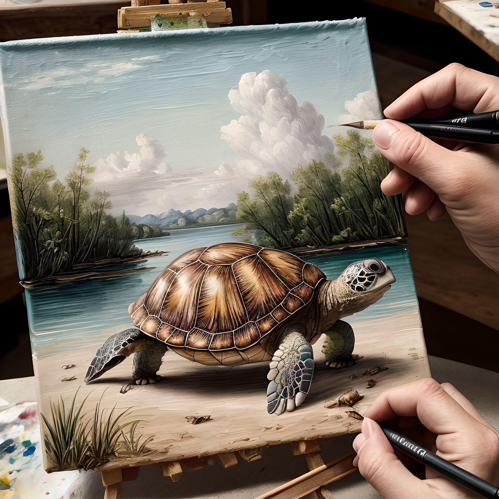

Dancing
I generally like Hip hop and popping more , but all forms of dancing interest me
Drawing
Recently I have taken an interset in Drawing

Reading
I say that I like reading but in reality I am just a novel weeb